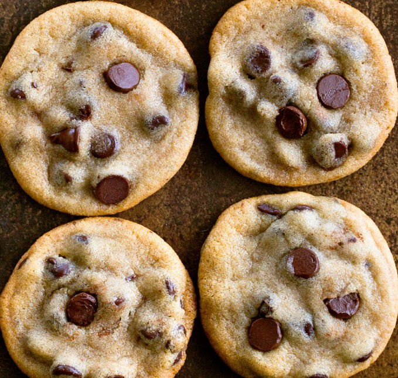

Vegan Chocolate Chip Cookie Recipe

Ingredients:
- 1 cup white, oat, or spelt flour
- 1/2 tsp baking soda
- 1/4 tsp salt
- 1/4 cup sugar
- 1/4 cup brown sugar or coconut sugar
- 1/3 cup chocolate chips
- 2 tbsp milk of choice, plus more if needed
- 2 tbsp oil or melted vegan butter
- 1/4 tsp pure vanilla extract
Instructions:
- Combine all dry ingredients in a bowl, then stir in wet to form a dough – it will be dry at first, so keep stirring until a cookie-dough texture is achieved.
- If needed, add 1-2 tbsp extra milk of choice.
- Form into one big ball, then either refrigerate at least 2 hours or freeze until the dough is cold.
- Once dough is chilled, preheat oven to 325 F. Form dough balls, and place on a greased baking tray, leaving enough room between cookies for them to spread.
- Bake 11 minutes on the center rack. They’ll look underdone when you take them out.
- Let them cool on the baking tray 10 minutes before touching, during which time they will firm up. If for whatever reason the cookies don't spread enough (climate can play a huge role), just press down with a spoon after baking.
Nutrition Facts:
|
Amount(per serving) |
| Calories: |
81 |
| Total Fat: |
2.9g |
| Cholesterol: |
0mg |
| Sodium: |
44mg |
| Total Carbs: |
13.4g |
| Total Protein: |
1.4g |